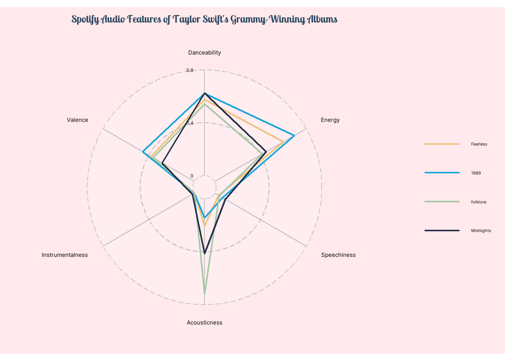

taylor_all_songs <- readr::read_csv('https://raw.githubusercontent.com/rfordatascience/tidytuesday/master/data/2023/2023-10-17/taylor_all_songs.csv')Data Context
The dataset and its information can be accessed at this link
Research Question
What are the differences in audio features across Taylor Swift’s Grammy-winning albums?
Data Transformation
Code
grammy_songs <- taylor_all_songs %>%
filter(album_name %in% c("Fearless", "1989", "folklore", "Midnights")) %>%
mutate(album_name = fct_relevel(album_name, c("Fearless", "1989", "folklore", "Midnights"))) %>%
drop_na(danceability) %>%
group_by(album_name) %>%
summarize(Danceability = mean(danceability),
Energy = mean(energy),
Speechiness = mean(speechiness),
Acousticness = mean(acousticness),
Valence = mean(valence),
Liveness = mean(liveness))Data Visualization
Code
showtext_auto()
ggradar(grammy_songs, values.radar = c("0", "0.4", "0.8"),
grid.min = 0, grid.mid = 0.4, grid.max = 0.8,
font.radar = "Inter",
grid.label.size = 5, axis.label.size = 5, legend.text.size = 10,
group.line.width = 0.8, group.point.size = 0,
group.colours = c("#EFC180", "#18A5DC", "#A5C9A5", "#242E47"),
background.circle.colour = "white",
gridline.mid.colour = "darkgrey",
legend.position = "right") +
labs(title = "Spotify Audio Features of Taylor Swift's Grammy-Winning Albums") +
theme(
plot.background = element_rect(fill = "#ffe9ec", color = "#ffe9ec"),
panel.background = element_rect(fill = "#ffe9ec", color = "#ffe9ec"),
legend.background = element_rect(fill = "#ffe9ec", color = "#ffe9ec"),
legend.key = element_rect(fill = NA, color = NA),
plot.title = element_text(family = "lobstertwo", size = 20, face = "bold",
color = "#2a475e", hjust = 0.5)
)